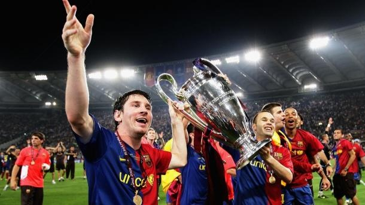

IDENTITAT I PLANTER
Passa el ratolí per consultar el registre històric de La Masia
El centre de formació del FC Barcelona estructura el model esportiu del primer equip des de la seva inauguració el 1979.
REGISTRE OFICIAL: El 25 de novembre de 2012, en un partit oficial de Lliga davant el Llevant UD, el FC Barcelona va alinear simultàniament onze jugadors formats a les categories inferiors del club (Valdés, Montoya, Piqué, Puyol, Alba, Busquets, Xavi, Iniesta, Pedro, Messi i Fàbregas).
Propers Compromisos Oficials
LALIGA · J13
FC Barcelona vs Villarreal CF
22 Nov · 14:00 CET
Spotify Camp Nou
CHAMPIONS LEAGUE · J5
Sabah FK vs FC Barcelona
25 Nov · 18:45 CET
Baku Olympic Stadium
LALIGA · J14
RC Deportivo vs FC Barcelona
29 Nov · 16:15 CET
Estadi ABANCA-RiazorPalmarès Principal
29
Lligues
5
Lligues de Campions
32
Copes del Rei
3